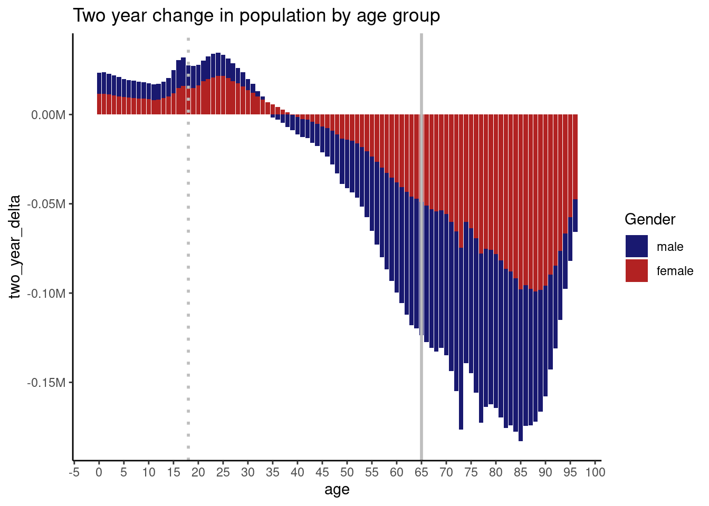

R.home()[1] "/usr/lib/R"Listen up, fellow data wranglers and spreadsheet warriors! I have been to the darkest corners of the internet and beyond, searching for answers to the most impossible data problems. I’ve scoured every forum, every blog, every tutorial, and even ventured into the depths of the forbidden knowledge that mere mortals should not possess. But fear not, my friends, for I have returned with a solution that will save you from the agony and frustration of data manipulation.
I’m not just talking about your everyday, run-of-the-mill data issues. No, no, no. I’m talking about the kind of data that would make even the most experienced analyst quiver in their boots. Messy, inconsistent, non-standard, and downright ugly data that makes you want to throw your computer out the window. But fear not, for I have conquered these data demons and emerged victorious.
And now, I am here to share my knowledge with you, my dear comrades in data crunching. This book will solve 80% of your data problems, with no complex macros or advanced languages required. It’s like a data superhero that will swoop in and save the day, leaving you with more time to sip on a margarita and bask in the glory of your newfound data skills.
So if you’re tired of staring at your computer screen, tears streaming down your face, and feeling like you’re stuck in a never-ending data nightmare, then this book is for you. It’s time to take back control of your data, and with my help, you’ll be a data champion in no time.
This is meant to quickly reference guide. I will teach you patterns techniques so that you can quickly and effectively get to solutions to your problems. This means building up your analysis frameworks and tool kits.
Please clean this up and make it more funny and dramatic I’ve scoured every tip, every yahoo message board, every stackoverflow question, every #RStats tweet, mr. excel forum. I’ve read all the intro for dummy books, blogs, secret forums. Youtube videos for days. Udemy? Done it. xxx I know it. I’ve reached all the dead ends that you will encounter and I’ve stared at the screen frustrated. I’ve been given all the last minute and impossible tasks to produce reports and faced the reality of ugly, inconsistent, messy data that you will find. I’ve heard all the promises of automation and how Power Query, DAX, Tableau, Power BI, snowflake, databricks will help only to have the same frustration as before but just a different problem.I’ve been in your shoes as we somehow have more tools and data that we ever had before our data increases yet tools get more complicated. Promises made and promises broken.
But this isn’t about me, this is about you. I’ve cried, I’ve sweat blood and cried tears so that you don’t have to. After working years in financial planning, budgeting & analysis roles, manipulating system data, external data, data meant to help that hurts, non standard data, excel models that are so large you pray to the gods that they don’t crash.
But there is a solution. If you are dreading your monthly report, your weekly stewardship and KPIs, I am here to tell you that this book will get you answers. Answers that you can use today to fix your problems. No complex macros to learn, no advanced languages. This will solve 80% of your problems, and will point you towards resources to solve the remaining.
Listen up, fellow data wranglers and spreadsheet warriors! I have been to the darkest corners of the internet and beyond, searching for answers to the most impossible data problems. I’ve scoured every forum, every blog, every tutorial, and even ventured into the depths of the forbidden knowledge that mere mortals should not possess. But fear not, my friends, for I have returned with a solution that will save you from the agony and frustration of data manipulation.
I’m not just talking about your everyday, run-of-the-mill data issues. No, no, no. I’m talking about the kind of data that would make even the most experienced analyst quiver in their boots. Messy, inconsistent, non-standard, and downright ugly data that makes you want to throw your computer out the window. But fear not, for I have conquered these data demons and emerged victorious.
And now, I am here to share my knowledge with you, my dear comrades in data crunching. This book will solve 80% of your data problems, with no complex macros or advanced languages required. It’s like a data superhero that will swoop in and save the day, leaving you with more time to sip on a margarita and bask in the glory of your newfound data skills.
So if you’re tired of staring at your computer screen, tears streaming down your face, and feeling like you’re stuck in a never-ending data nightmare, then this book is for you. It’s time to take back control of your data, and with my help, you’ll be a data champion in no time.
This is meant to quickly reference guide. I will teach you patterns techniques so that you can quickly and effectively get to solutions to your problems. This means building up your analysis frameworks and tool kits.
If you’ve been counting, you’ve noticed I’ve used “effective” almost 15 times. What do I mean by that, I’m balancing your time, With all the skills, you can (and some of you should) significantly advanced your knowledge but what happens? For many of you, you’ll build a tool only you can use, you will need to spend significantly amount of your time learning these skills and testing these skills. Things will go wrong. You will be frustrated, eventually you’ll get it right, you will be better for it. But then you will move, the person replacing you will have no clue what you are doing and will quickly undo it, and sure you’ve learnt an advance skill, but unless your organization is build around that level of skill standard - you may not intend it but you will do more harm than good.
It also means you will be able to do a typical problem in an defined amount of time. Trust me, there is no point reading this if you can’t do a simple analysis in 15 minutes. Why? Because you spent time training on to have any benefit with your work.
By the time you are done, you will gladly look forward to data. It will not intimidate you. You will be excited to quickly semi automate many of your processes. You will be confident. You will be focus on value and process.
I want to tell you that you will be able to great in 2 weeks but I will lie to you. Yes, for sure you will do some great things very quickly and if you are lucky enough that your data is already perfectly organized and your management teams actually know what they want with data than for sure - you will hit the ground running quickly. However for the rest of us, it will take time to replicate your existing Excel skill set in R and than surpass it. However, I promise you, this is investment is worth it when you are able to automate a report in 10 minutes that used to take you a week.
Be patient, the concepts taught here are not hard or complex they are just different than what you know. As you become more familiar with the new concepts you will learn it very quickly.
Listen up, my fellow data warriors! This quick reference guide will be your ticket to solving data problems in a snap. I’ll teach you the most effective patterns and techniques so that you can build up your analysis frameworks and tool kits like a pro.
And let me tell you, I don’t just throw around the word “effective” lightly. I’m all about balancing your time and making sure you’re not wasting it on skills that only you can use. Sure, you might be able to do some pretty advanced stuff, but what good is it if you’re the only one who knows how to use it? The person who replaces you will undo it in a heartbeat, and all that time and effort will go down the drain.
That’s why I’m all about doing a typical problem in a defined amount of time. If you can’t do a simple analysis in 15 minutes, then what’s the point? You need to be able to train and benefit from your work, and that means being able to automate processes and semi-automate others. Trust me, by the time you’re done with this guide, you’ll be excited to tackle data head-on. It won’t intimidate you anymore, and you’ll be confident in your abilities.
Now, I’m not going to lie to you and tell you that you’ll be a data superstar in just two weeks. It’s going to take some time to replicate your existing Excel skill set in R and surpass it. But trust me when I say that the investment is worth it. Once you can automate a report in 10 minutes that used to take you a whole week, you’ll wonder how you ever lived without these skills.
So be patient, my friends. The concepts I’m about to teach you are not hard or complex, they’re just different from what you’re used to. But as you become more familiar with them, you’ll learn them in no time. Get ready to become a data ninja, my friends. The future is yours!
This book will guide you through realistic business scenarios on how to create and automate reports with an emphasis on maximizing your team’seffectiveness
You read this and 1) will know how to apply tools to the real life situations that you have faced with an emphasis of effectiveness (as defined by your team & maintenance of the reports you build)
While there are some fantastic R reasources www.bigbookofR.com, the referenced example datasets rarely prepare you for the real life complexities of dealling with Corporate datasets, including challenges of dealing with messy Corporate datasets, maintaining reports when there is significant process changes, and system and offline manual data manipulation required to generate repoerts.
Additionaly, whther it is R or python, most learning resources tend to have a heavy focus on statistical techniques / applications which while useful in certain contexts in reality do not help most analyts or managers with their business reporting.
This book is focused on developing effective analyst skills that will improve both your R and Excel skills, recognizing that he reality of using exclusively being able to use R in a corporate environment is rare. Furthermore by relating R to excel, you will gain a deeper learning into how R works.
There will be better ways to do things that we are teaching you however, they often involve wider resources or time commitments that you may not be able to maintain (however we will provide resources in case you are curious!)
The dirty secret of popular data science languages are they are perishable, that is to say if you don’t use them frequently you will forget the techniques, syntax and common patterns to solve your issues.
the real barrier and challenge to you learning R is not the language itself, although you won’t believe it now, R is very simple to learn, the challenge will be in getting
R.home()[1] "/usr/lib/R"(https://statisticsglobe.com/if-else-condition-add-extra-layer-ggplot2-plot-r)
library(tidyverse)── Attaching core tidyverse packages ──────────────────────── tidyverse 2.0.0 ──
✔ dplyr 1.1.2 ✔ readr 2.1.4
✔ forcats 1.0.0 ✔ stringr 1.5.0
✔ ggplot2 3.4.2 ✔ tibble 3.2.1
✔ lubridate 1.9.2 ✔ tidyr 1.3.0
✔ purrr 1.0.1
── Conflicts ────────────────────────────────────────── tidyverse_conflicts() ──
✖ dplyr::filter() masks stats::filter()
✖ dplyr::lag() masks stats::lag()
ℹ Use the conflicted package (<http://conflicted.r-lib.org/>) to force all conflicts to become errorsdata <- data.frame( # Create example data
x = 1:10,
y = c(10:1),
category = c(rep("A", 5), rep("B", 5))
)
ggp <- ggplot(data, aes(x = x, y = y)) + # Create a base plot
geom_point(aes(color = category)) +
theme_minimal()
threshold <- 8 # Set a threshold for the condition
ggp_new <- if (max(data$y) > threshold) { # Add an extra layer based on the condition
ggp +
geom_hline(yintercept = threshold,
linetype = "dashed",
color = "red")
} else {
ggp
}https://github.com/BjnNowak/bertin
https://jtools.jacob-long.com/
https://rpkgs.datanovia.com/ggpubr/
#explanation of log odds
https://rpkgs.datanovia.com/ggpubr/
https://automeris.io/WebPlotDigitizer/
https://twitter.com/i/bookmarks
library(tidyverse)
df <- readr::read_csv("/home/hagan/Downloads/pop23.csv",name_repair = janitor::make_clean_names) %>%
filter(
sex!=0
,age<99
)Rows: 306 Columns: 6
── Column specification ────────────────────────────────────────────────────────
Delimiter: ","
dbl (6): sex, age, estimatesbase2020, popestimate2020, popestimate2021, pope...
ℹ Use `spec()` to retrieve the full column specification for this data.
ℹ Specify the column types or set `show_col_types = FALSE` to quiet this message.extract_year_make_longer <- function(.data,.col) {
.data %>%
select(
age
,sex
,any_of(
c({{.col}})
)
) %>%
pivot_longer(-c(1:2)) %>%
mutate(year=parse_number(name)) %>%
select(-name)
}
col_names <- c("popestimate2020","popestimate2021","popestimate2022")
list_df <- map(col_names,~extract_year_make_longer(df,.x))
df_20 <- list_df[[1]] %>% as_tibble() %>% rename(pop20=value) %>% select(sex,age,pop20)
df_21 <- list_df[[2]] %>%
as_tibble() %>%
mutate(age_20=age-1) %>%
filter(age_20>-1) %>%
select(age_20,value,sex) %>%
rename(pop_21=value)
df_22 <- list_df[[3]] %>%
as_tibble() %>%
mutate(age_20=age-2) %>%
filter(age_20>-1) %>%
select(age_20,value,sex) %>%
rename(pop22=value)
left_join(df_20,
df_21,
join_by(age==age_20
,sex==sex)) %>%
left_join(df_22,
join_by( age==age_20
,sex==sex)) %>%
mutate(
one_year_delta=pop_21-pop20
,two_year_delta=pop22-pop20
) %>%
ggplot(aes(y=two_year_delta,x=age,fill=factor(sex,labels = c("male","female"))))+
geom_col()+
geom_vline(xintercept = 18,linetype="dotted",size=1, color="grey")+
geom_vline(xintercept = 65, size=1, color="grey")+
scale_x_continuous(n.breaks=30)+
scale_y_continuous(labels = scales::label_comma(scale=1/1e6,suffix="M"))+
scale_fill_manual(values=c(male="midnightblue",female="firebrick"))+
theme_classic()+
labs(
fill="Gender"
,title="Two year change in population by age group"
)Warning: Using `size` aesthetic for lines was deprecated in ggplot2 3.4.0.
ℹ Please use `linewidth` instead.Warning: Removed 4 rows containing missing values (`position_stack()`).
df_2021_spk <- df_spk %>% select(age,sex,popestimate2021) df_2022_spk <- df_spk %>% select(age,sex,popestimate2022)
df_spk %>% filter( age<99 ,sex!=0 ) %>% ggplot(aes(y=popestimate2022,x=age,fill=factor(sex)))+ geom_col()+ geom_vline(xintercept = 18,linetype=“dotted”)+ geom_vline(xintercept = 75,linetype=“dotted”)+ scale_x_continuous(n.breaks = 30) # geom_col(aes(y=popestimate2020),col=“blue”,alpha=.2)
expand_dates <- function(x, parts = c(“year”, “month”, “day”)) { funs <- list(year = year, month = month, day = day)[parts] mutate(x, across(where(lubridate::http://is.Date), funs)) }
```